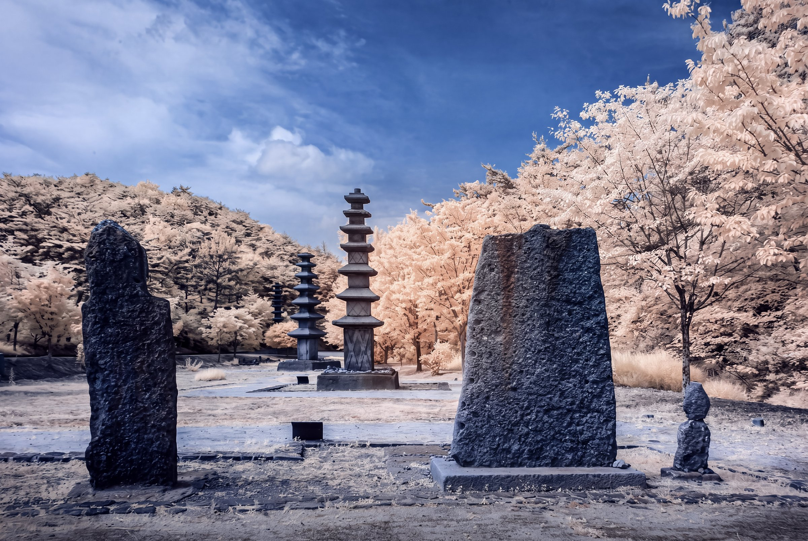
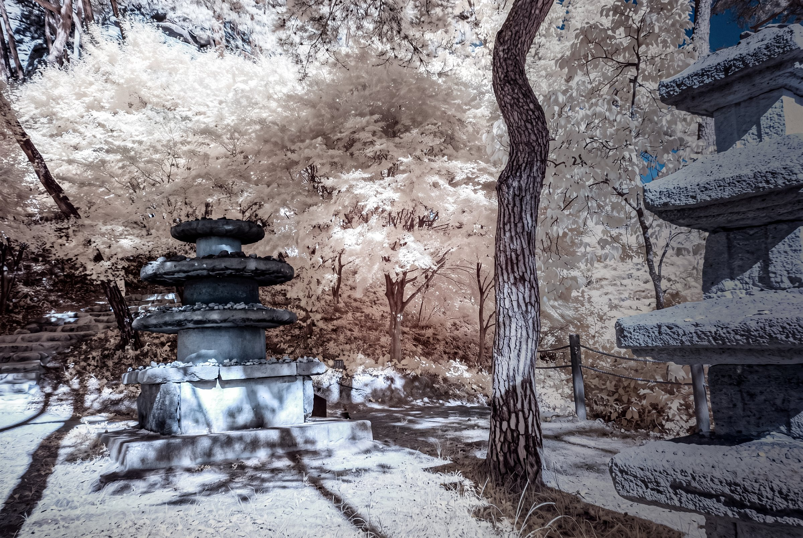
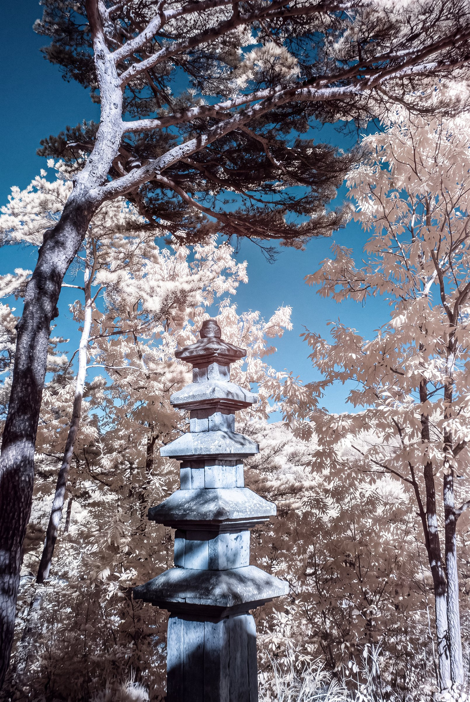
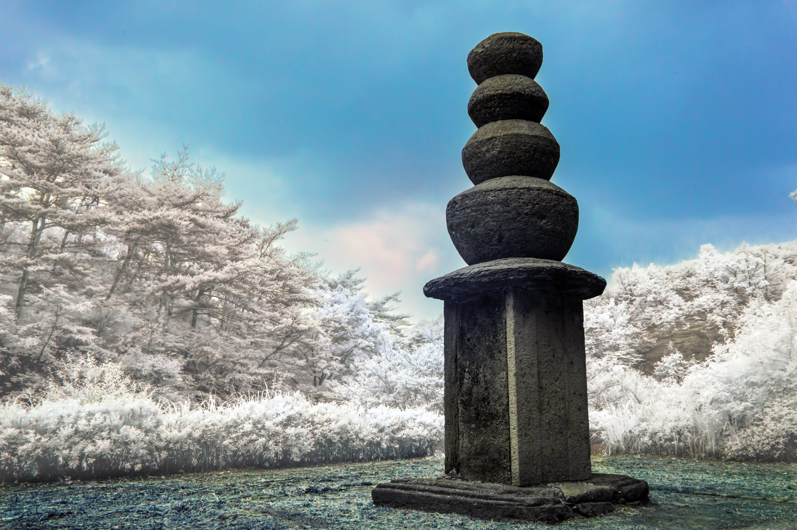
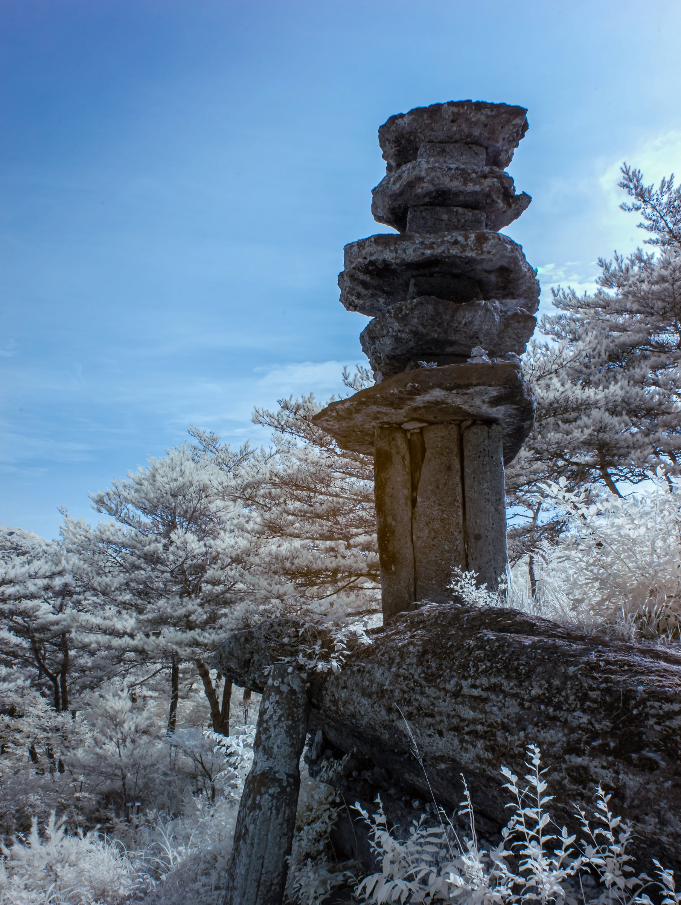
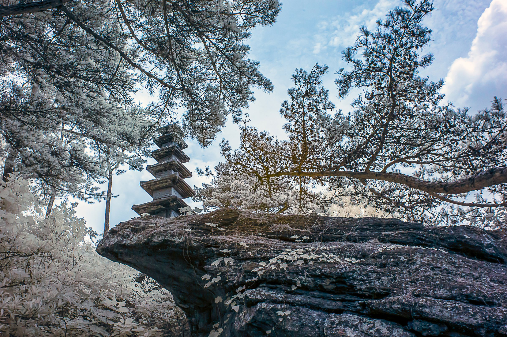

처음 마주한 운주사의 돌부처와 돌탑은 낯설었다. 이목구비가 희미한 얼굴과 서로 다른 돌의 형태를 바라볼수록, 그 낯섦은 친근함으로 바뀌었다.
나는 적외선으로 이곳을 다시 바라보았다. 나뭇잎은 밝아지고 익숙한 색은 달라졌다. 돌과 나무 사이의 공간은 눈으로 보았을 때와 다른 깊이로 다가왔다.
다른 세상처럼 보이지만, 사진 속 돌과 나무는 내가 서 있던 그 자리에 있다. 이 사진들은 같은 세계가 보는 방식에 따라 얼마나 다르게 드러나는지 묻는다.
The stone Buddhas and pagodas of Unjusa felt unfamiliar at first. As I looked at their faint features and varied forms, that unfamiliarity gradually gave way to a sense of closeness.
I returned to these surroundings through infrared photography. Leaves grew luminous, familiar colours shifted, and the spaces between stone and tree took on a different depth.
Though it may appear to be another world, the stones and trees remain where I stood. These photographs ask how differently the same world can reveal itself through another way of seeing.





